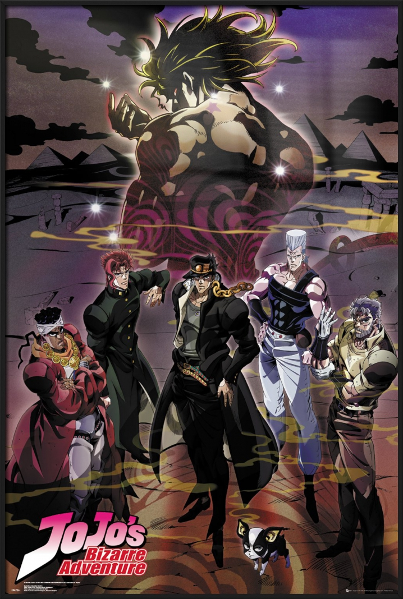
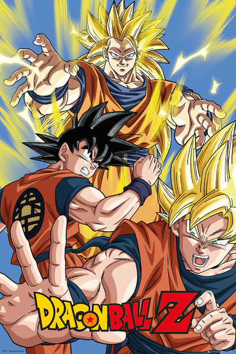

HAIKYU!
Our best selling show! Price: $3.99
Inspired after watching a volleyball ace nicknamed "Little Giant" in action, small-statured Shouyou Hinata revives the volleyball club at his middle school. The newly-formed team even makes it to a tournament; however, their first match turns out to be their last when they are brutally squashed by the "King of the Court," Tobio Kageyama. Hinata vows to surpass Kageyama, and so after graduating from middle school, he joins Karasuno High School's volleyball team—only to find that his sworn rival, Kageyama, is now his teammate.
Thanks to his short height, Hinata struggles to find his role on the team, even with his superior jumping power. Surprisingly, Kageyama has his own problems that only Hinata can help with, and learning to work together appears to be the only way for the team to be successful. Based on Haruichi Furudate's popular shounen manga of the same name, Haikyuu!! is an exhilarating and emotional sports comedy following two determined athletes as they attempt to patch a heated rivalry in order to make their high school volleyball team the best in Japan.

"To be honest, I'm guilty of being biased and judgemental, and more than once to boot. A few years ago I had seen my friend's collection of Naruto manga. I scoffed and even teased him a bit, having seen what appeared to be ridiculous anime promos on TV aimed at children. Within a year, I had discovered anime and manga myself. I have since apologized. "
Haikyuu!!, or High Jump in English, is about Hinata and Kageyama, two players who originally stand at the opposite side of the volleyball net.
THE BEST SHOW EVER!!! I just keep rewatching it again and again!

When man-eating Titans first appeared 100 years ago, humans found safety behind massive walls that stopped the giants in their tracks. But the safety they have had for so long is threatened when a colossal Titan smashes through the barriers, causing a flood of the giants into what had been the humans' safe zone. During the carnage that follows, soldier Eren Jaeger sees one of the creatures devour his mother, which leads him to vow that he will kill every Titan. He enlists some friends who survived to help him, and that group is humanity's last hope for avoiding extinction at the hands of the monsters.
Attack On Titan
Price: $2.99

The story follows Light Yagami, a teen genius who discovers a mysterious notebook: the "Death Note", which belonged to the Shinigami Ryuk, and grants the user the supernatural ability to kill anyone whose name is written in its pages. The series centers around Light's subsequent attempts to use the Death Note to carry out a worldwide massacre of individuals whom he deems immoral and to create a crime-free society, using the alias of a god-like vigilante named "Kira", and the subsequent efforts of an elite Japanese police task force, led by enigmatic detective L, to apprehend him.
Deathnote
Price: $0.99
Naruto is a Japanese manga series written and illustrated by Masashi Kishimoto. It tells the story of Naruto Uzumaki, a young ninja who seeks recognition from his peers and dreams of becoming the Hokage, the leader of his village.
Naruto
Price: $3.99

A legendary 6th player. An up-and-coming power player, Taiga Kagami, is just back from America. When he comes to Seirin High School, he meets the super-ordinary boy, Tetsuya Kuroko. Kagami is shocked to find that Kuroko isn't good at basketball, in fact, he's bad!
Kuruko No Basket
Price: $2.99

The story follows the perspective of Kiyotaka Ayanokōji, a quiet and unassuming boy who is not good at making friends and would rather keep his distance, but possesses unrivaled intelligence. He is a student of Class-D, which is where the school dumps its inferior students. After meeting Suzune Horikita and Kikyō Kushida, two other students in his class, Kiyotaka's situation begins to change and he starts to get involved in many affairs, and his thought of ideal normal high school life begins to get scattered.
Classroom Of the Elite
Price: $4.99
A boy raised by boars, who wears a boar's head, boards the Infinity Train on a new mission with the Flame Pillar along with another boy who reveals his true power when he sleeps. Their mission is to defeat a demon who has been tormenting people and killing the demon slayers who oppose it.
Demon Slayer
Price: $3.99

Yuji Itadori is a boy with tremendous physical strength, though he lives a completely ordinary high school life. One day, to save a friend who has been attacked by cursed spirits, he eats the finger of Sukuna, taking the curse into his own soul. From then on, he shares one body with the King of Curses. Guided by the most powerful of jujutsu sorcerers, Satoru Gojo, Yuji is admitted to the Tokyo Jujutsu High School of Sorcery, an organization that exorcises the curses... and thus begins the heroic tale of a boy who became a curse to fight curses, a life from which he could never turn back.
Jujutsu Kaisen
Price: $4.99
Human and demons reside in different realms -- Assiah and Gehenna, respectively -- that usually don't intersect. But now, demons are starting to enter the tangible world of the human race and must be culled. Thankfully, there are people who can exorcise them. Rin Okumura, a young man of strange origins and exceptional power, sets out to rid the world of the evil spirits in an effort to be the ultimate exorcist and hero. Accomplishing that would mean defeating his own father, Satan.
Blue Exorcist
Price: $4.99

Monkey D. Luffy wants to become the King of all pirates. Along his quest he meets: a skilled swordsman named Roronoa Zolo; Nami, a greedy thief who has a knack for navigation; Usopp, a great liar who has an affinity for inventing; Sanji, a warrior cook; Chopper, a sentient deer who is also a skilled physician; and Robin, former member of Baroque Works. The gang sets sail to unknown seas in Grand Line to find the treasure of One Piece.
One Piece
Price: $1.99

The story of the Joestar family, who are possessed with intense psychic strength, and the adventures each member encounters throughout their lives. Chronicles the struggles of the cursed Joestar bloodline against the forces of evil.
JoJO's Bizzara Adventure
Price: $1.99
Set in the early 20th century, in a fictional universe in which alchemy is a widely practiced science, the series follows the journey of two alchemist brothers, Edward and Alphonse Elric, who are searching for the philosopher's stone to restore their bodies after a failed attempt to bring their mother back to life.
Fullmental Alchemist
Price: $2.99

Dragon Ball tells the tale of a young warrior by the name of Son Goku, a young peculiar boy with a tail who embarks on a quest to become stronger and learns of the Dragon Balls, when, once all 7 are gathered, grant any wish of choice.
Dragon Ball Z
Price: $3.99